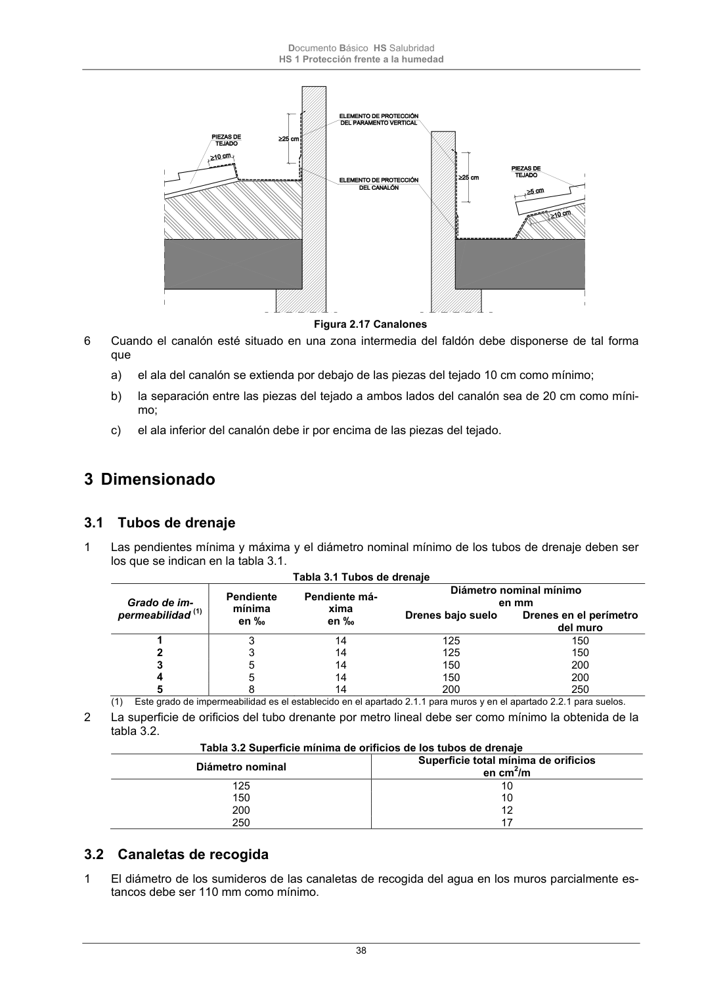
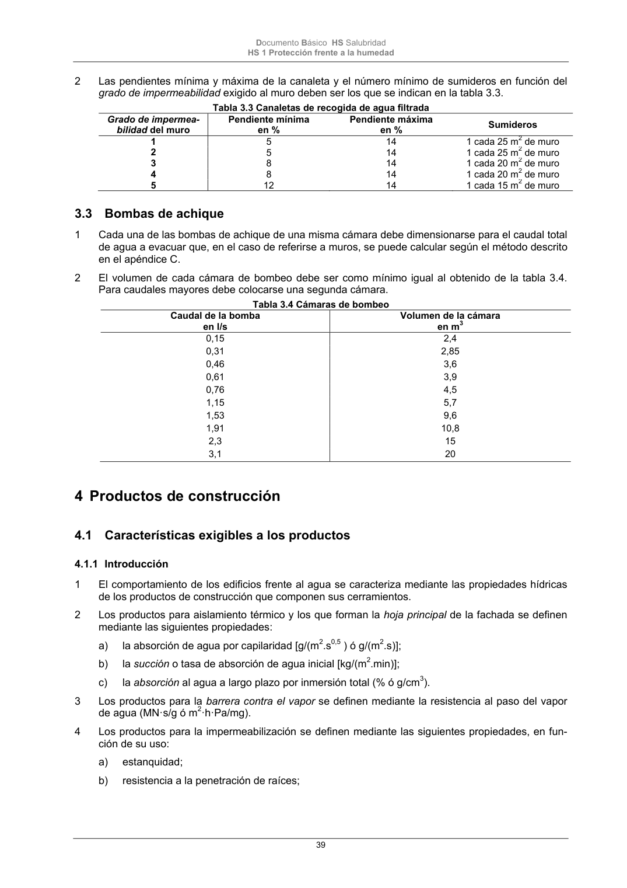

DB-HS · 3.2 Canaletas de recogida · versión 2022-06-14 · capa oficial
Formatos: JSON compacto · Markdown · PDF fuente
Ámbito del documento · texto del ámbito · documento y tablas
ID técnico a0093 · PDF pág. 38-39 · jerarquía no validada por persona · contrastado con el literal de la página 38 (candidato tipográfico); no validado por persona · padre: raíz
3.2 Canaletas de recogida 1 El diámetro de los sumideros de las canaletas de recogida del agua en los muros parcialmente es- tancos debe ser 110 mm como mínimo. Documento Básico HS Salubridad HS 1 Protección frente a la humedad 39 2 Las pendientes mínima y máxima de la canaleta y el número mínimo de sumideros en función del grado de impermeabilidad exigido al muro deben ser los que se indican en la tabla 3.3. Tabla 3.3 Canaletas de recogida de agua filtrada Grado de impermea- bilidad del muro Pendiente mínima en % Pendiente máxima en % Sumideros 1 5 14 1 cada 25 m2 de muro 2 5 14 1 cada 25 m2 de muro 3 8 14 1 cada 20 m2 de muro 4 8 14 1 cada 20 m2 de muro 5 12 14 1 cada 15 m2 de muro


PDF fuente redistribuible: copia fiel enlazada en esta página (SHA256 verificado).